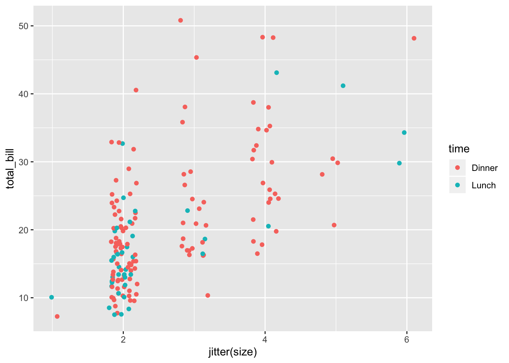
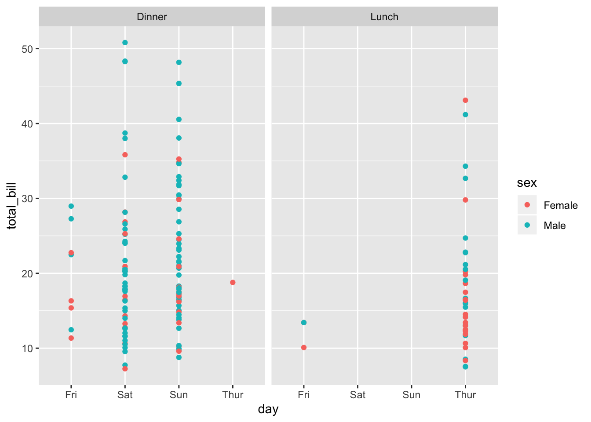

Die ersten Schritte zur Prognose mitteles linearer Regression
Prognosen sind ein wichtiger Bestandteil von Data Science und ist durchaus nicht nur auf moderne Ansätze, wie Neuronale Netze, deep lerning etc. begrenzt. Auch die gute, alte Regression kann ein sehr sinnvolles Mittel sein solche Prognosen zu erstellen.
Um ein wenig die Ideen hinter Prognosen zu beleuchten wollen wir uns an Prognosen mit dem tipping-Daten heranwagen.
Einlesen der tipping-Daten
Zuerst laden wir die notwenidgen Pakete:
library(mosaic)
Falls die tipping-Daten noch nicht im Verzeichnis liegen, laden wir sie aus dem Internet nach:
if (!file.exists("tips.csv")) {
download.file("https://goo.gl/whKjnl", destfile = "tips.csv")
}
Nun laden wir die tipping-Daten in den Speicher in den Datenrahmen tips:
tips <- read.csv2("tips.csv")
Wir werfen einen ersten Blick auf die tipping-Daten:
inspect(tips)
##
## categorical variables:
## name class levels n missing
## 1 sex factor 2 244 0
## 2 smoker factor 2 244 0
## 3 day factor 4 244 0
## 4 time factor 2 244 0
## distribution
## 1 Male (64.3%), Female (35.7%)
## 2 No (61.9%), Yes (38.1%)
## 3 Sat (35.7%), Sun (31.1%), Thur (25.4%) ...
## 4 Dinner (72.1%), Lunch (27.9%)
##
## quantitative variables:
## name class min Q1 median Q3 max mean sd n
## 1 total_bill numeric 3.07 13.3475 17.795 24.1275 50.81 19.785943 8.9024120 244
## 2 tip numeric 1.00 2.0000 2.900 3.5625 10.00 2.998279 1.3836382 244
## 3 size integer 1.00 2.0000 2.000 3.0000 6.00 2.569672 0.9510998 244
## missing
## 1 0
## 2 0
## 3 0
Vorbereiten der Test-/Trainings- und Auswertungesdaten
Zunächst schränken wir die tipping-Daten auf die Variabeln “total_bill”, “sex”, “smoker”, “day”, “time”, “size” ein und speichern das Ergebnis wieder in tips:
tips %>%
select(c("total_bill", "sex", "smoker", "day", "time", "size")) -> tips
Ziel ist es, den Rechnungsbetrag (“total_bill”) auf Grundlage der Variabeln “sex”, “smoker”, “day”, “time” und/oder “size” vorherzusagen.
Wir teilen den tipping-Datensatz auf in eine Trainingsdatensatz (“tipstrain”), einem Testdatensatz (“tipstest”) und einem Prüfdatensatz (“tipspruef”). Der Trainingsdatensatz sollte rund zweidrittel der Daten die wir haben umfassen. Der Testdatensatz die restlich ca. eindrittel.
trainings_anteil = 2/3
# n.train ist ein Index für alle Werte,
# die wir im Trainingsdatensatz haben wollen:
x.train <- sample(1:nrow(tips), floor(trainings_anteil*nrow(tips)))
# Trainingsdatensatz erstellen:
tipstrain <- slice(tips, x.train)
# Prüfdatensatz erstellen, also alles was
# nicht in den Trainingsdatensatz gekommen ist:
tipspruef <- slice(tips, -(x.train))
# Der Testdatensatz ist der Prüfdatensatz
# ohne die Variable total_bill:
tipspruef %>%
select(-total_bill) -> tipstest
Mit dem Tainingsdatensatz versuchen wir nun ein Prognosemodell zu erstellen, um aus den Testdatensatz eine Prognose für “total_bill” zu erstellen.
Das Prognose-Modell wird ausschließlich auf Grundlage des Trainingsdatensatzes erstellt. Am Ende wollen wir unser Modell dann aber mit Hilfe des Prüfdatensatzes bewertet.
Die Datenlage
Ein (paar) Blick(e) auf unsere Trainingsdaten:
gf_point(total_bill ~ jitter(size), color=~time, data=tipstrain)

gf_point(total_bill ~ day | time, color = ~ sex, data=tipstrain)

Prognosemodel: Nullmodell
Aufstellen des Nullmodel aka Regression mit der Achse
Wir erstellen das Nullmodell wie folgt:
lm.null <- lm( total_bill ~ 1, data=tipstrain)
summary(lm.null)
##
## Call:
## lm(formula = total_bill ~ 1, data = tipstrain)
##
## Residuals:
## Min 1Q Median 3Q Max
## -13.159 -6.989 -2.429 4.171 30.401
##
## Coefficients:
## Estimate Std. Error t value Pr(>|t|)
## (Intercept) 20.4086 0.7311 27.91 <2e-16 ***
## ---
## Signif. codes: 0 '***' 0.001 '**' 0.01 '*' 0.05 '.' 0.1 ' ' 1
##
## Residual standard error: 9.306 on 161 degrees of freedom
Das Nullmodell sagt in jedem Fall den Rechnungsbetrag vorher als den Mittelwert der Trainingsdaten!
mean(~ total_bill, data=tipstrain)
## [1] 20.40864
Nun bestimmten wir mit Hilfe des Nullmodells “lm.null” eine Vorhersage für die Testdaten:
predict.null <- predict(lm.null, newdata=tipstest)
head(predict.null)
## 1 2 3 4 5 6
## 20.40864 20.40864 20.40864 20.40864 20.40864 20.40864
Wie gesagt, das Nullmodell liefert als Prognose immer den Mittelwert der Trainingsdaten zurück, das mathematische Nullmodell lautet also:
$$\widehat{total_bill_i} = 20.408642 $$
Auswertung des Nullmodells
Zur Auswertung Nutzen wir den mittleren Absolutabstand zwischen der Vorhersage und den Prüfdaten:
maa.null <-sum( abs( tipspruef$total_bill - predict.null))
maa.null
## [1] 544.772
Prognosemodell: Lineare Regression gegen “size” als metrischer Wert
Aufstellen des Modells
Auswertung des Regressionsmodell
Norman Markgraf
Diplom-Mathematiker
Norman Markgraf ist freiberuflicher Dozent für Mathematik, Statistik und Informatik, sowie freiberuflicher Programmierer.